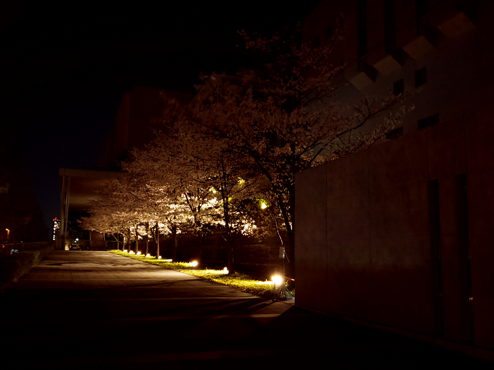

~THEME SUMMARY~
コロナ禍で、友達や家族と出掛けることは難しい状況になっています。
そんな一人のときでも、心動かされるような風景に出会うことはきっとあると思います。
今こそ、あなたの撮った素敵な一枚をみんなで共有しませんか？
投票は締め切りました
10作品の中からあなたが良いと思った3枚までに投票してください
グランプリ：賞金1万円
GRAND PRIX
83VOTES

TITLE：海月
2nd PLACE
44VOTES

TITLE：溶ける青
3rd PLACE
35VOTES

TITLE：桜